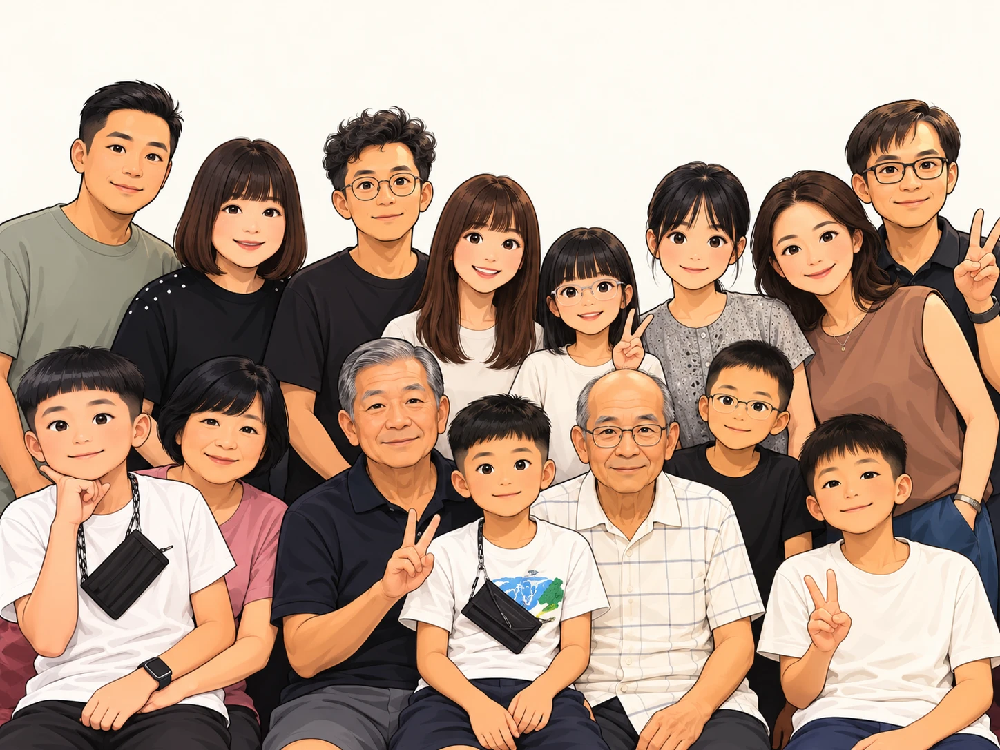

依經緯度簡化繪製，形狀與比例近似實際，景點位置為大約位置。
出發前檢查：看充電器或電器上的標示，寫「100–240V」的（手機、筆電充電器大多是）可以直接用；只寫「110V」的（例如部分吹風機、電湯匙）不能直接插，否則會燒壞。建議帶一個萬用轉接頭。
這兩個航班號碼和航線都確實存在，但目前查得到的是 2026 年夏季的時刻表。2027 年 2 月的班表還沒公布，每週飛哪幾天（目前每週 5 班）也查不到，所以 2/4（四）和 2/8（一）有沒有飛還無法確認。請以機票或旅行社提供的時間為準，出發前再到航空公司官網確認。
機場到陽東鎮市區約 9–10 公里，車程約 15–20 分鐘，塞車時可能到 30 分鐘。行程已含入境快速通關。
燒烤、海鮮加火鍋的自助餐，有 50 多道菜，晚上有音樂和舞蹈表演。
原本位於陽東鎮丁舅廟（Dinh Cậu）旁的富國島夜市，已經在 2026 年停止營業。它的 10 年場地合約在 2025 年底到期，攤商做到 2026 年春節後，場地在 3 月底交還，4 月開始拆除。當地政府表示夜市不會取消，正在找新場地，但目前還沒有確定新地點。
媒體提到的替代夜市有三個：北島大世界夜市、南島日落小鎮的 VUI-Fest 市集，以及長灘附近 Trần Hưng Đạo 路上的夜市。
詳細資訊待查：這一站實際會去哪個夜市，請向旅行社確認四星級的全別墅度假村，有管家服務，每棟是 2–4 房的私人泳池別墅。位於島西南岸的長灘（Bãi Trường，Dương Tơ 一帶）。
號稱越南最大的野生動物園，位於島的北端，佔地 380 公頃，有約 200 種、超過 4,000 隻動物。園區分成兩部分：可以步行參觀的動物園，以及搭遊園車穿過動物活動範圍的開放式 Safari 區。
被稱為「不夜城」的綜合娛樂區，位於島北的長灘。街區仿照威尼斯打造，有運河和貢多拉船。進入園區免費，但泰迪熊博物館、貢多拉船和「越南精華」表演都要另外買票。行程表寫明含景點門票。
搭乘威尼斯式的貢多拉小船遊大世界運河。
展出 500 多隻泰迪熊，展覽跟著探險家「Teddy Jones」的環遊世界故事走，另外有一區介紹越南文化，例如穿奧黛的泰迪熊。
二選一。越式洗頭（gội đầu dưỡng sinh）是躺在按摩床上洗頭，通常用草本洗髮水，並包含頭部、肩頸按摩，很多店也會加上熱毛巾。
詳細資訊待查：按摩店名稱未提供大世界裡的歐式精緻餐廳，湖畔座位正對水舞秀的舞台。
在大世界的愛情湖（Hồ Tình Yêu）演出，結合水舞、燈光和 3D 投影，免費觀賞。
行李隨車，今晚換到南島的飯店。
官網稱它是越南最大的主題樂園，就在野生動物園旁邊。園區分成六區：歐洲大道（城堡區）、奇幻世界、維京村、颱風世界水上樂園、海龜造型的「海貝」水族館（The Sea Shell），以及冒險世界。
位於海龜水族館一樓，可以一邊用餐一邊看魚群游過。
富國島最大的名產超市，也是旅行團常去的購物站，店內有咖啡廳和換匯櫃檯。地址是陽東鎮 141A Trần Hưng Đạo。
富國島有名的特產有魚露、黑胡椒、珍珠和桃金孃酒（sim）。
Premier Residences Phu Quoc Emerald Bay，五星級飯店，由雅高（Accor）集團管理，位於南島安泰的 Khem 海灘（Bãi Khem）。離日落小鎮約 3.4 公里，車程 6–10 分鐘，有免費接駁車每 30 分鐘一班，營運到 22:00；離香島纜車站約 7 分鐘車程。
在日落小鎮演出的大型多媒體秀，用約 1,000 平方公尺的水幕投影，加上雷射、火焰特效，最後以煙火收尾。故事講述富國島少年與銀河守護者的愛情，靠著愛與團結打敗黑暗勢力。2025 年 4 月獲金氏世界紀錄認證為「最大的常設水幕投影劇場」。
全長 7,899.9 公尺，2018 年 1 月獲金氏世界紀錄認證為「最長的不間斷三線纜車」，同年 2 月 4 日開放。從日落小鎮旁的安泰站出發，經過椰子島（Hòn Dừa）和 Hòn Rỏi 兩座小島，抵達香島，單程約 15 分鐘。
纜車終點的香島上有自然公園、海灘，以及 Aquatopia 水上樂園，裡面有滑水道、漂漂河和兒童戲水區。
島上常見的套票會含 Mango 或 Ba Miền 餐廳的自助午餐。
詳細資訊待查：實際是哪一間餐廳位於島西南岸的安泰，整個小鎮是義大利、地中海風格，房子漆成各種鮮豔顏色，以看夕陽聞名。地標是 75 公尺高的威尼斯鐘樓，仿照威尼斯的聖馬可鐘樓建造。
由義大利建築師 Marco Casamonti 設計，全長超過 800 公尺，靈感來自米開朗基羅的名畫《創造亞當》。兩段橋身伸向海面，但沒有接在一起，中間留著約 30 公分的空隙。
用這個名稱查不到，最接近的是日落小鎮的 Sun Bavaria GastroPub。這是一間德式精釀啤酒餐廳，有紅色圓頂，位在威尼斯街上、正對親吻橋，供應巴伐利亞料理和海鮮拼盤，在店裡就看得到煙火。
詳細資訊待查：請向旅行社確認是否就是這間和 Kiss of the Sea 是不同的表演。在親吻橋前的海灣演出，約 1,000 發煙火，加上水上煙火、雷射，以及 24 位水上摩托車、飛行板選手的特技，全程配合音樂。
從日落小鎮、安泰一帶到機場約 18–23 公里，車程 25–30 分鐘，塞車時可能到 40 分鐘。
魚露不能帶上飛機當手提行李。托運的規定依航空公司而定，例如越南航空限每人 3 公升，要用塑膠瓶密封並裝進保麗龍箱。太陽富國航空的規定我查不到，買之前請先問航空公司。預計 16:10 抵達桃園機場第一航廈。